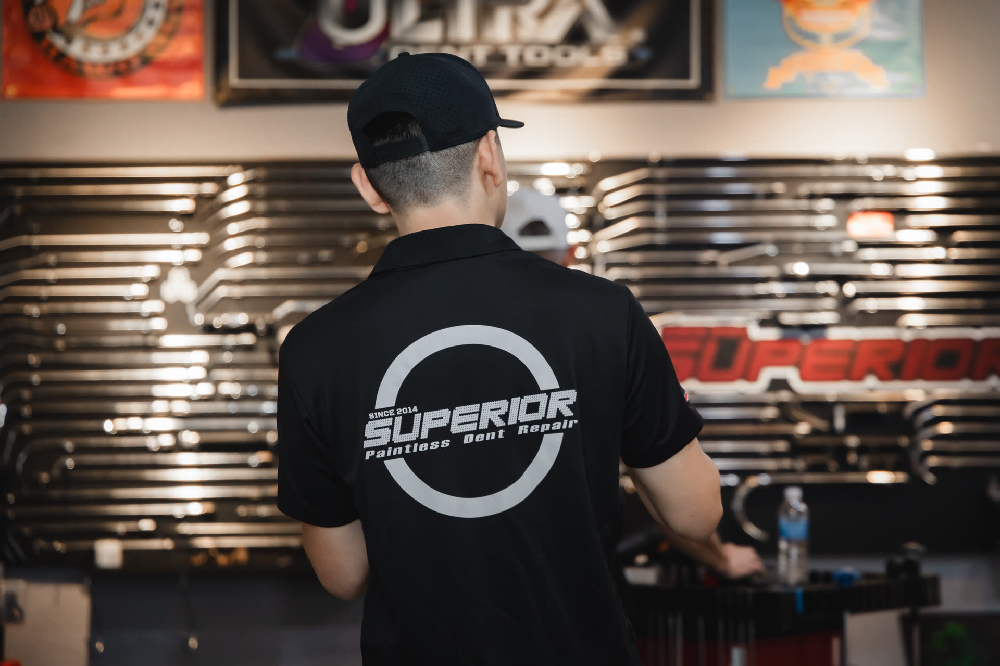
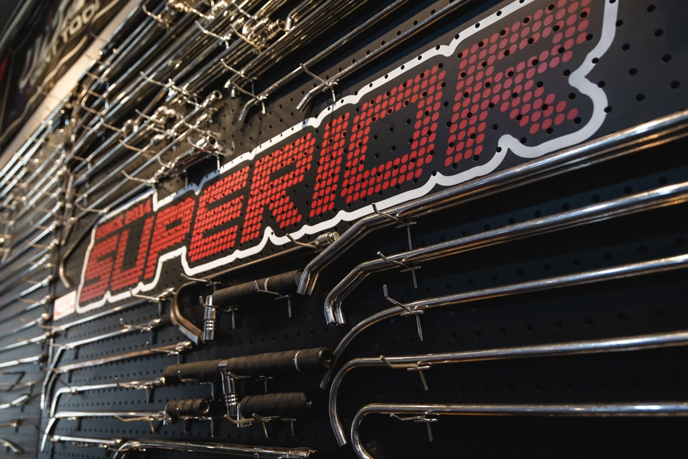
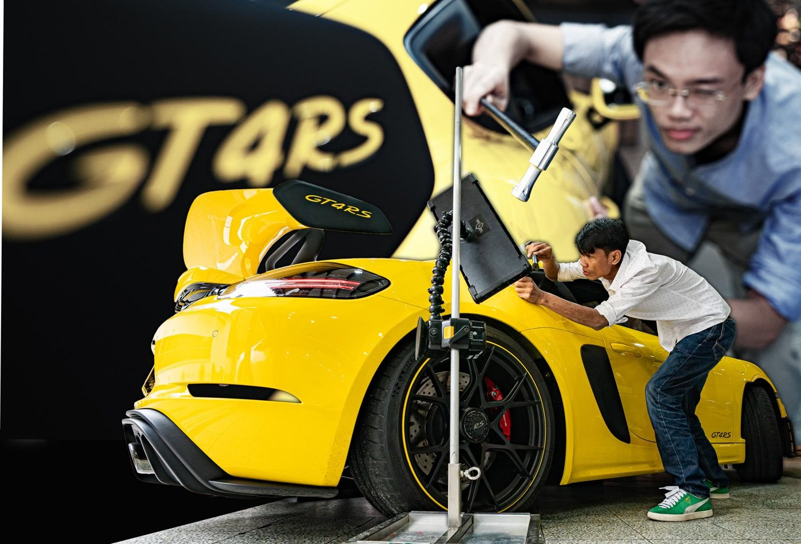

01要做到馬哥這個程度，要什麼條件？
四個條件，沒有一個是天份

03我該抱著什麼期待？
這 12 天給你三樣，也有三樣給不了

04畢業之後，我最後的目標是什麼？
這三題，今天每個人都要講
“If you want to be successful in this world, you have to follow your passion, not the paycheck.”把興趣當工作 · 把工作當興趣
01 / 04
← → 翻頁 F 全螢幕